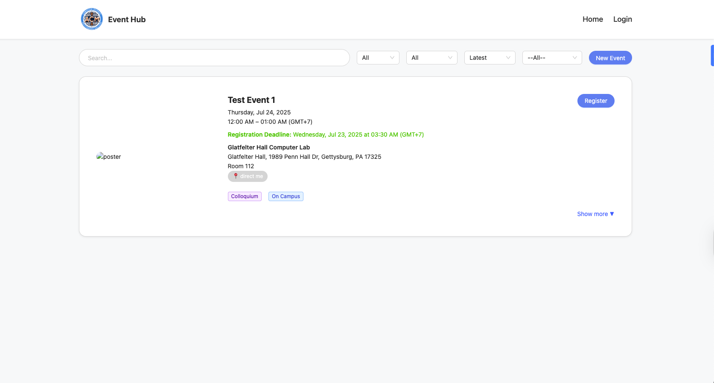
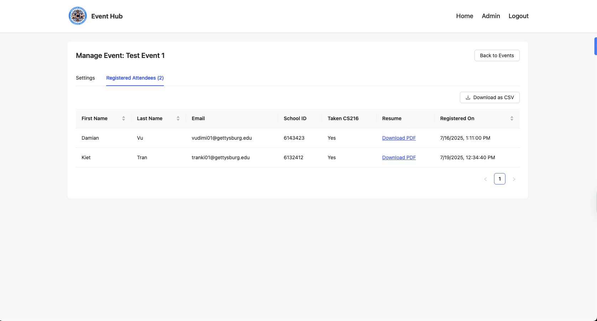
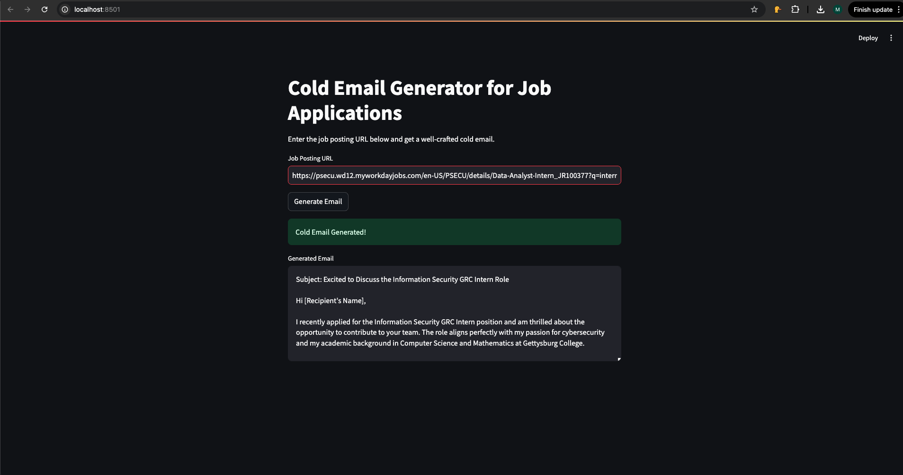

Rice Leaf Disease Classification
- When: October 2025.
- Where: GitHub.
- What: A deep learning-based system for automatic detection and classification of rice leaf diseases using computer vision, addressing food security challenges in rice-dependent nations like Bangladesh.
- How: Implemented transfer learning with a pre-trained ResNet-18 CNN architecture on 1,106 images across 5 disease classes. Applied advanced preprocessing including image augmentation (flips, rotation, color jitter) and normalization. Employed Bayesian optimization for hyperparameter tuning and a dual-learning-rate strategy for fine-tuning. Achieved 79.99% accuracy on white background images and 74.61% on mixed testsets through 5-fold stratified cross-validation, demonstrating practical viability for real-world agricultural applications.
Gettysburg College CS Event Hub
- When: June-July 2025.
- Where: GitHub & Live Demo.
- What: A comprehensive event management web application for the Gettysburg CS department, streamlining event creation, registration, and attendance tracking.
- How: A full-stack app using React and Ant Design on the frontend. The Node.js/Express.js backend features a three-layer architecture, MySQL database, JWT for authentication, and a barcode scanning system for attendance.


Cold Email Generator
- When: February 2025.
- Where: GitHub.
- What: A tool that generates personalized cold emails by scraping job postings and aligning keywords with a user's resume, leveraging NLP to craft compelling outreach messages.

GHack Damini
- When: Nov 2024.
- Where: GitHub.
- What: A voice-interactive chatbot developed for Gettysburg College's inaugural GHackathon. Damini integrates Gemini 1.5 on an Express.js backend and uses Socket.IO for real-time communication with an HTML frontend.

Disaster Relief Project
- When: Sep 2024.
- Where: Devpost.
- What: A UMBCHack 2024 project developed by a team of 4. It connects natural disaster victims with resource suppliers by matching seekers with the nearest available resources within a 100km radius.


Mail Chat
- When: June 2024 - July 2024.
- Where: GitHub.
- What: A highly scalable, multi-microservice application built with Go that enables users to chat in an email-like system.
- How: Comprises five microservices (Broker, Auth, Listener, Logging, Mail) communicating via RabbitMQ. The entire application is containerized with Docker and orchestrated with Kubernetes for scalability.
Calendar 2.0
- When: March 2024 - May 2024.
- Where: Frontend & Backend.
- What: A task-management application with features similar to Apple Calendar, allowing users to manage tasks on a calendar-like UI.
- How: The backend uses Express.js, Mongoose for authentication with MongoDB Atlas, and a separate SQL API with OracleDB for task data. The frontend is built with React for real-time updates.


Book Searcher System
- When: December 2023.
- Where: Frontend & Backend.
- What: A highly scalable, distributed backend system that powers a book-searching UI.
- How: The system uses the TF-IDF algorithm to rank books by relevance and integrates Apache Zookeeper for high availability, consistency, and automatic failure recovery.